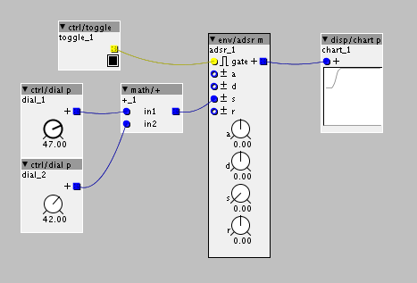

Hello,
I´m making a patch in which I have a base value controlled by a ctrl/dial p object, and to that value I add a randomized value from zero to whatever I have dialed on another ctrl/dial p object.
Then those two values are added and sent to a frac32 inlet on another object.
In order to avoid sending a value higher than 64 I do some operations on the random signal to scale it so the resulting value received on the blue inlet never exceeds 64.
The thing is my patch is starting to get a bit big, and I have to take out stuff that is not needed in order to add the stuff I do need, so I´m thinking that maybe all that calculation is not really necessary, since doing tests on another simple patch nothing bad seems to happen if I do send a value higher than 64.
So my question is on the title: Is it bad to send values higher than 64 to a frac32 input, or it will just see it as 64 and just keep going? This seems to be the case, but who knows if it is messing with the code and might start having a wrong behaviour.
Here´s a picture of an example of what I´m talking about.

How wrong is it to overflow a frac32 input?
The common way to clip signals between 0/-64 and 64 is the function:
__USAT(...,27) (unipolar)
and
__SSAT(....,28) (bipolar)
As far as I know, this is already build into the adsr's modulation+parameter calculation, so you won't need anything before it to clip the signal.
The fractional values normally being used are between -64 and 64 (which is -/+ 1<<27, which means it uses 27 bits for unipolar and 28 bits for bipolar signals). As the total bits that are allowed internally in the code is mostly bipolar 32 bits, this means you got 4 bits left to "go over" without the integer losing bits that it can't "hold". As soon as you dó go over this, the signal will wrap around from max to min (when you go up from zero, when you reach 1<<31 it will become -1<<31 and it will go up to zero again from there)
All right, thank you so much!
The adsr module was just for showing what I was talking about in the simplest possible way, I´m actually sending the signal to @cpwitz 's grain-player (used in grain-mill).
Anyway, from your explanation I understand that still I won´t overflow anything, since the biggest amount I could send is double of 64, and unless these 32 bits don´t behave like the binary bits I know, 5 bits (it is unipolar) gives me way more margin than that.
Again, thanks a lot! 
it does still depend on the code in his module. If his function can't handle inputs higher then unipolar 27 or bipolar 28 bits and he didn't use a clipper to saveguard this, it could still give a weird behavior.
For example, if, for some reason, he bitshifted the input to the right by 4 bits without clipping, going over the 27 bits would still lead to some unexpected behavior. But you can always check this by just sending a value to it that passes 27 bits to be sure (like adding two sliders together and passing that as an input). If it dóes wrap, you can always add the clipping function yourself:
__USAT ( param _p+inlet _p,27) (without the space between param and _p, where p would be the name of the inlet/parameter)
But you can always check this by just sending a value to it that passes 27 bits to be sure (like adding two sliders together and passing that as an input).
That is what I did, and it seems to work just fine 
Thanks!